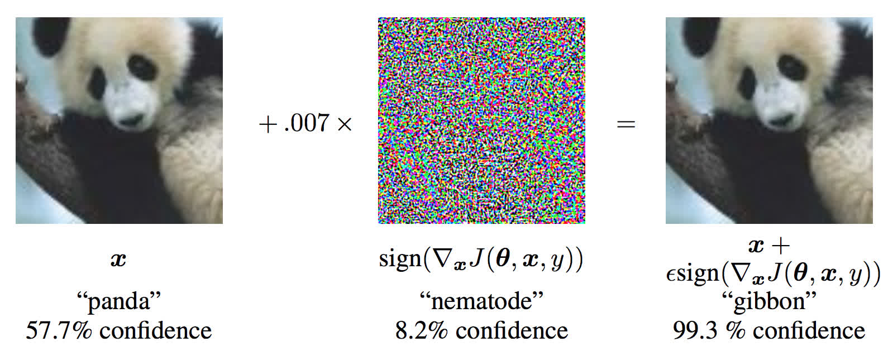

9.3 FGSM Attack
Adversarial Example Generation
Created Date: 2025-05-25
If you are reading this , hopefully you can appreciate how effective some machine learning models are. Research is constantly pushing ML models to be faster, more accurate, and more efficient. However, an often overlooked aspect of designing and training models is security and robustness, especially in the face of an adversary who wishes to fool the model.
This tutorial will raise your awareness to the security vulnerabilities of ML models, and will give insight into the hot topic of adversarial machine learning. You may be surprised to find that adding imperceptible perturbations to an image can cause drastically different model performance. Given that this is a tutorial, we will explore the topic via example on an image classifier. Specifically, we will use one of the first and most popular attack methods, the Fast Gradient Sign Attack (FGSM) , to fool an MNIST classifier.
9.3.1 Threat Model
For context, there are many categories of adversarial attacks, each with a different goal and assumption of the attacker’s knowledge. However, in general the overarching goal is to add the least amount of perturbation to the input data to cause the desired misclassification.
There are several kinds of assumptions of the attacker’s knowledge, two of which are: white-box and black-box. A white-box attack assumes the attacker has full knowledge and access to the model, including architecture, inputs, outputs, and weights. A black-box attack assumes the attacker only has access to the inputs and outputs of the model, and knows nothing about the underlying architecture or weights.
There are also several types of goals, including misclassification and source/target misclassification. A goal of misclassification means the adversary only wants the output classification to be wrong but does not care what the new classification is. A source/target misclassification means the adversary wants to alter an image that is originally of a specific source class so that it is classified as a specific target class.
In this case, the FGSM attack is a white-box attack with the goal of misclassification. With this background information, we can now discuss the attack in detail.
9.3.2 Fast Gradient Sign Attack
One of the first and most popular adversarial attacks to date is referred to as the Fast Gradient Sign Attack (FGSM) and is described by Goodfellow et. al. in Explaining and Harnessing Adversarial Examples . The attack is remarkably powerful, and yet intuitive.
It is designed to attack neural networks by leveraging the way they learn, gradients. The idea is simple, rather than working to minimize the loss by adjusting the weights based on the backpropagated gradients, the attack adjusts the input data to maximize the loss based on the same backpropagated gradients. In other words, the attack uses the gradient of the loss w.r.t the input data, then adjusts the input data to maximize the loss.
Before we jump into the code, let’s look at the famous FGSM panda example and extract some notation.

Figure 1 - FGSM Panda Example
From the figure, \(\mathbf{x}\) is the original input image correctly classified as a "panda" , \(y\) is the ground truth label for \(\mathbf{x}\) , \(\theta\) represents the model parameters, and \(J(\theta, x, y)\) is the loss that is used to train the network. The attack backpropagates the gradient back to the input data to calculate \(\Delta_x J(\theta, \mathbf{x}, y)\). Then, it adjusts the input data by a small step (\(\epsilon\) or 0.007 in the picture) in the direction (i.e. sign(\Delta J(\theta, \mathbf{x}, y)\)) that will maximize the loss. The resulting perturbed image, \(x'\) , is then misclassified by the target network as a "gibbon" when it is still clearly a "panda" .
Hopefully now the motivation for this tutorial is clear, so lets jump into the implementation.
9.3.3 Implementation
In this section, we will discuss the input parameters for the tutorial, define the model under attack, then code the attack and run some tests.
9.3.3.1 Inputs
There are only three inputs for this tutorial, and are defined as follows:
epsilons- List of epsilon values to use for the run. It is important to keep 0 in the list because it represents the model performance on the original test set. Also, intuitively we would expect the larger the epsilon, the more noticeable the perturbations but the more effective the attack in terms of degrading model accuracy. Since the data range here is \([0,1]\), no epsilon value should exceed 1.pretrained_model- path to the pretrained MNIST model which was trained with pytorch/examples/mnist . For simplicity, download the pretrained model here .
9.3.3.2 Model Under Attack
As mentioned, the model under attack is the same MNIST model from pytorch/examples/mnist . You may train and save your own MNIST model or you can download and use the provided model. The Net definition and test dataloader here have been copied from the MNIST example. The purpose of this section is to define the model and dataloader, then initialize the model and load the pretrained weights.
9.3.3.3 FGSM Attack
Now, we can define the function that creates the adversarial examples by perturbing the original inputs. The fgsm_attack function takes three inputs, image is the original clean image \((x)\) , epsilon is the pixel-wise perturbation amount \((\epsilon)\) , and data_grad is gradient of the loss w.r.t the input image \((\nabla_{x} J(\mathbf{\theta}, \mathbf{x}, y))\) . The function then creates perturbed image as:
Finally, in order to maintain the original range of the data, the perturbed image is clipped to range \([0, 1]\) .
9.3.3.4 Testing Function
Finally, the central result of this tutorial comes from the test function. Each call to this test function performs a full test step on the MNIST test set and reports a final accuracy.